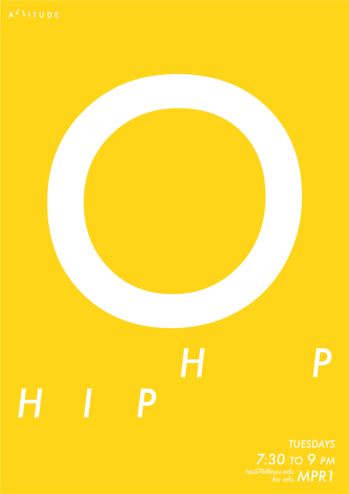
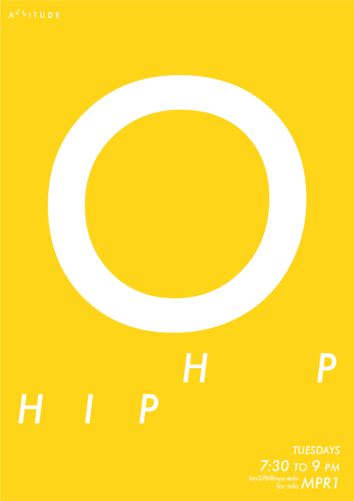
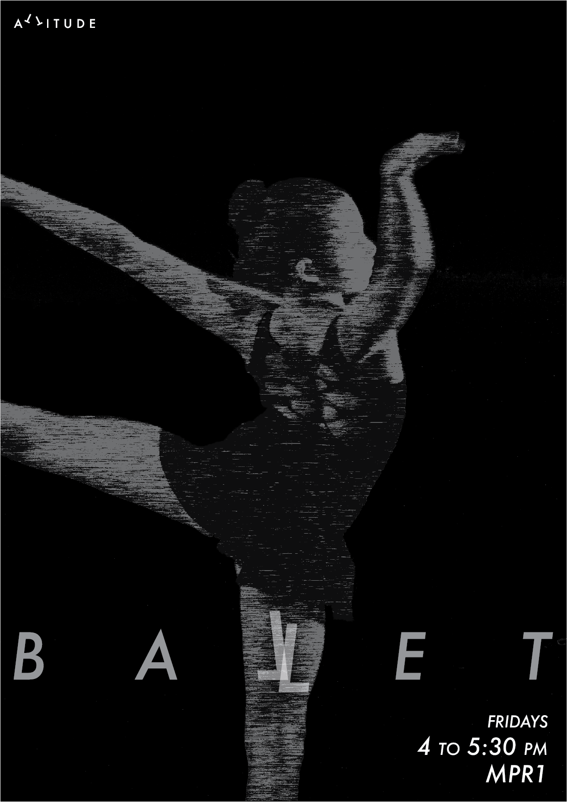
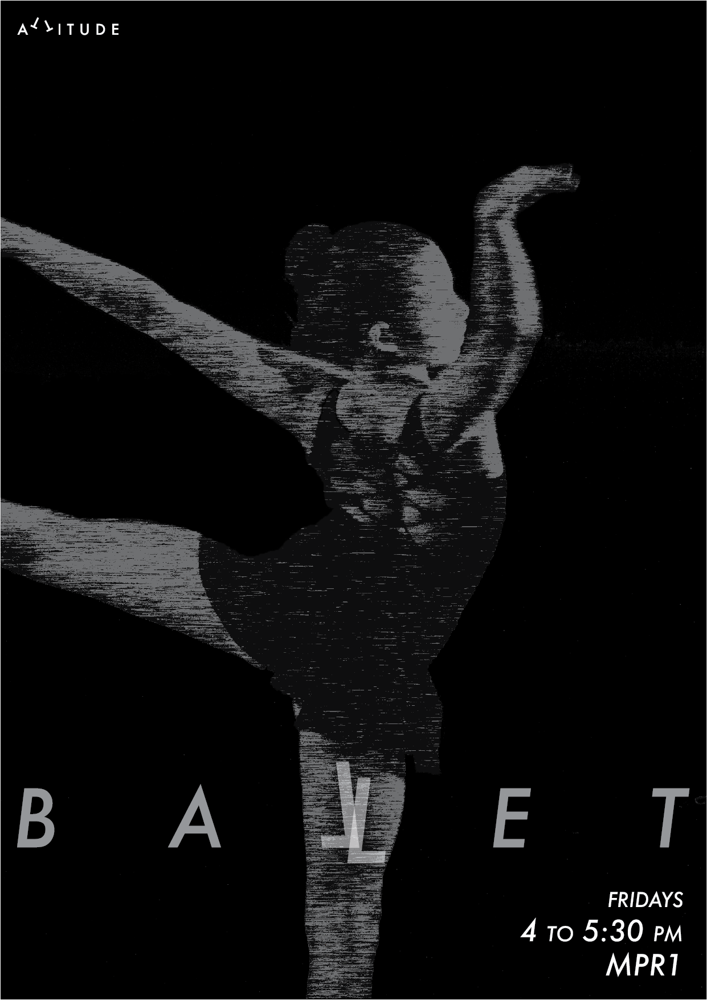
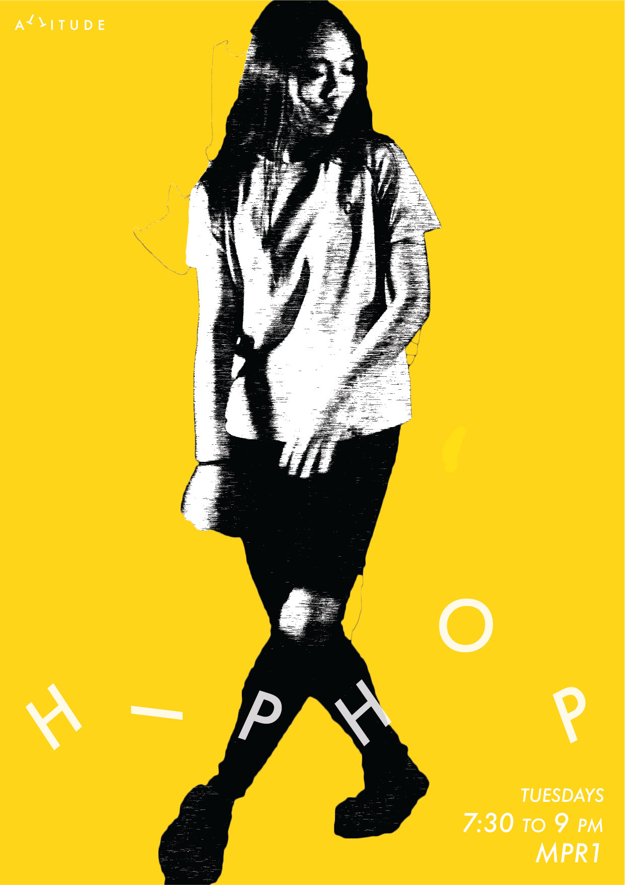
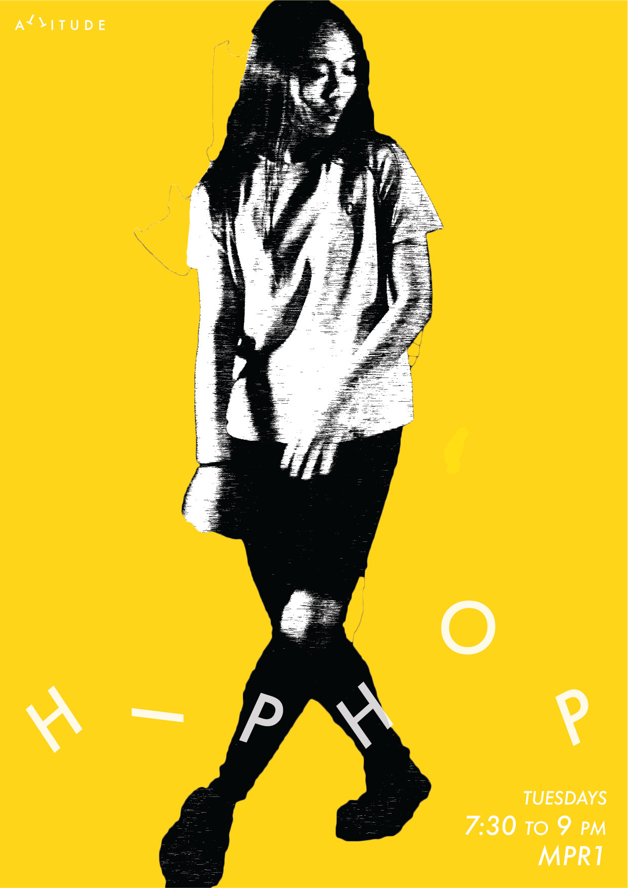
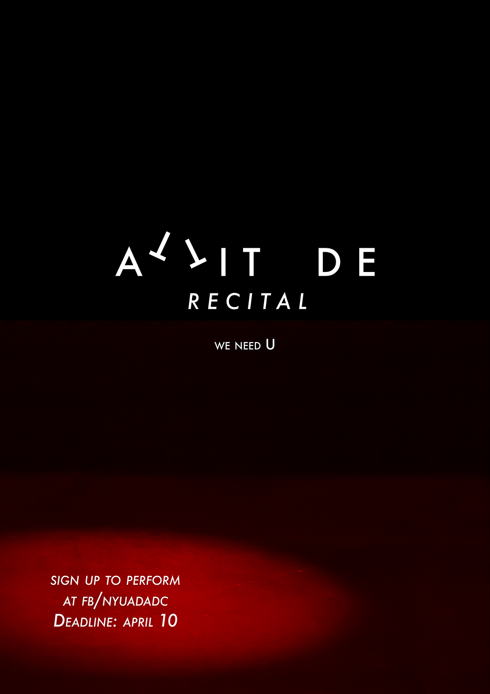
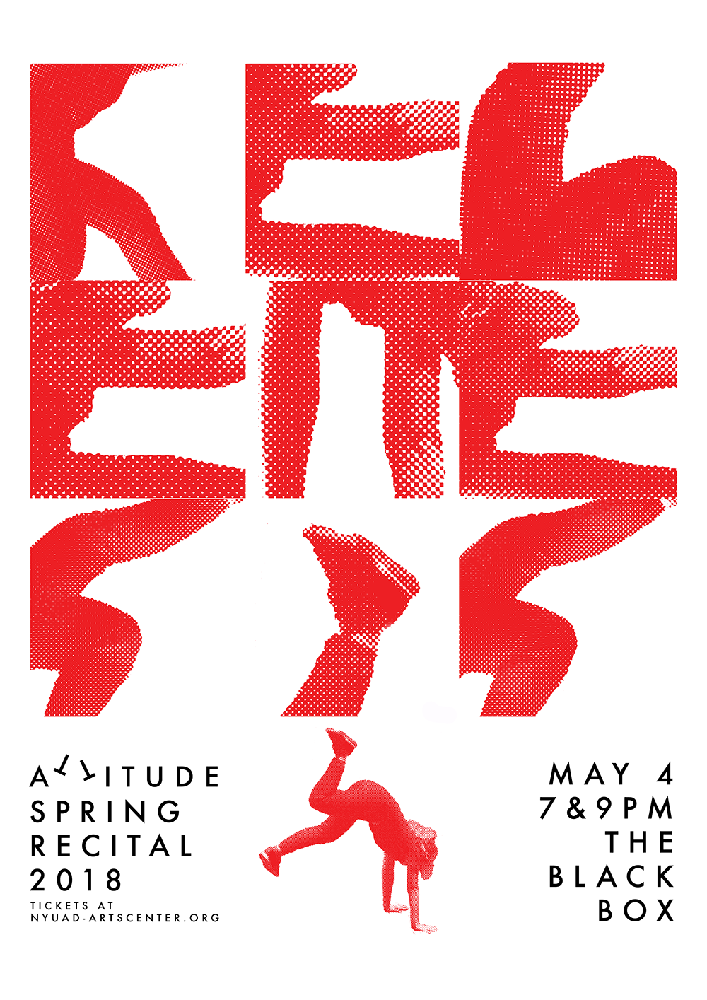
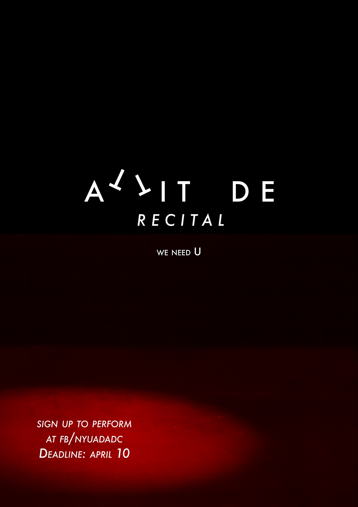
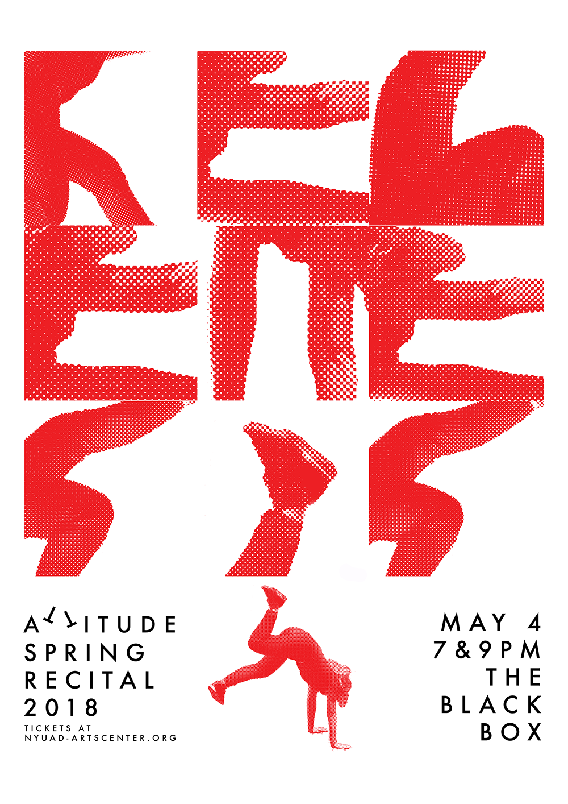

Attitude is New York University Abu Dhabi’s official student club for dance, also the largest student group on campus. After 4 years since establishment, the new executive board saw a need to rebrand Attitude to give it a more dynamic identity, both in terms of visuals and of its presence on campus.
The old logo of Attitude represents dance with a ballet-dancing silhouette, which is a very much cliché representation of dance. In renewing the logo, the goal was to represent dance in a more general way, somehow including all kinds of dances, and also to emphasize the fun in dancing.
The final logo is simply ATTITUDE in Futura with flipped T’s, creating dancing feet. This logotype represents dance ambiguously enough but also embodies the feeling of fun, cartoon-ish dance. The use of typography to create visual puns acts a very recognizable and flexible identity for Attitude. At the same time, this ensures Attitude campaigns will continue to carry enjoyment, as they always present the public with interesting puzzles to discover in the visuals.

 


 

 


 


